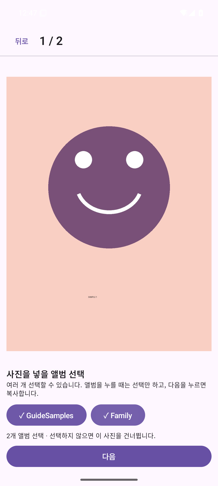

Android 사진 정리 앱
사진을 넘기며
빠르게 분류하세요.
휴대전화 앨범을 등록하면 그 이름이 분류 버튼으로 나타납니다. 사진을 보고 버튼을 여러 개 고르세요. 고른 버튼은 색이 진해지고, 다음을 누르면 각 앨범에 복사한 뒤 다음 사진으로 넘어갑니다. 원본 사진은 그대로 두고 인터넷 연결 없이 사용할 수 있습니다. 분류 결과는 삼성 갤러리의 앨범 탭에서 폴더별로 볼 수 있습니다.
Android 앱 설치 파일 받기 처음 설치하시나요? 실제 화면 보며 따라하기 분류한 사진을 삼성 갤러리 앨범에서 보기 Google 포토 맨 위에 복사본이 쌓일 때
설치 방법
버튼을 누른 다음, 휴대전화에서 확인하세요.
- 01
APK 다운로드
Android 휴대전화에서 위 버튼을 눌러 설치 파일을 받습니다.
- 02
설치 승인
다운로드한 파일을 열고 Android 설치 화면에서 확인합니다. 처음 설치할 때는 브라우저의 ‘알 수 없는 앱 설치 허용’을 요청할 수 있습니다.
- 03
사진 권한 확인
앱을 실행하면 사진 접근 이유가 먼저 표시됩니다. ‘확인하고 권한 요청’을 누른 뒤 Android 권한 창에서 허용 여부를 선택하세요.
이전에 테스트용 APK를 설치한 경우
기존 테스트용 앱과 이번 릴리스 APK는 서명이 다릅니다. 설치가 거부되면 기존 앱을 제거한 뒤 다시 설치하세요. 앱의 설정과 진행 기록은 지워지지만 원본 사진과 갤러리에 복사한 사진은 남습니다.